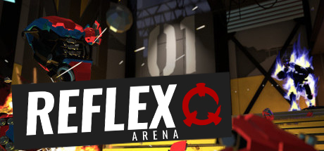
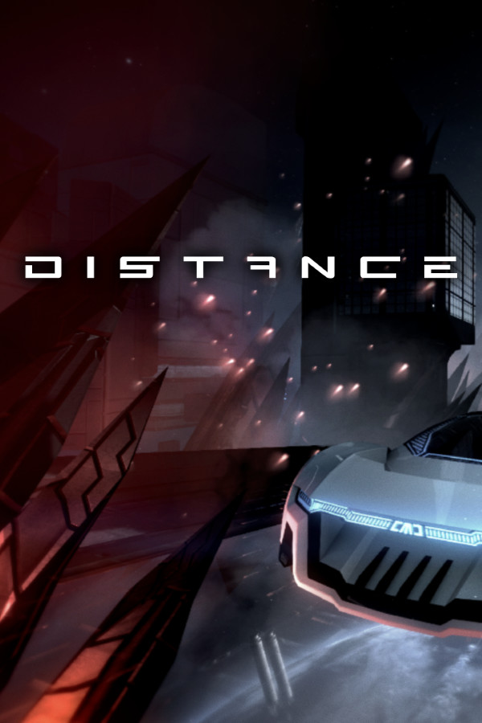
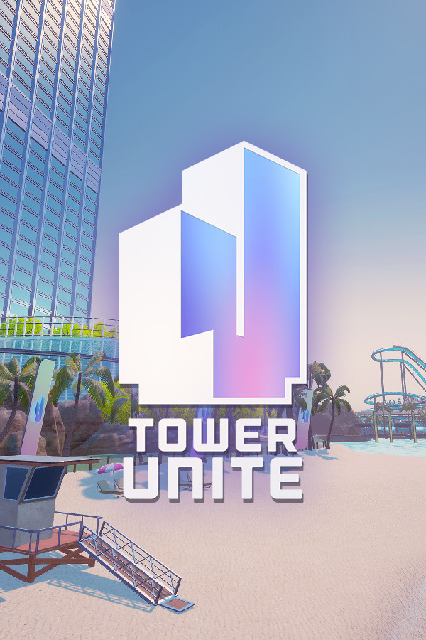
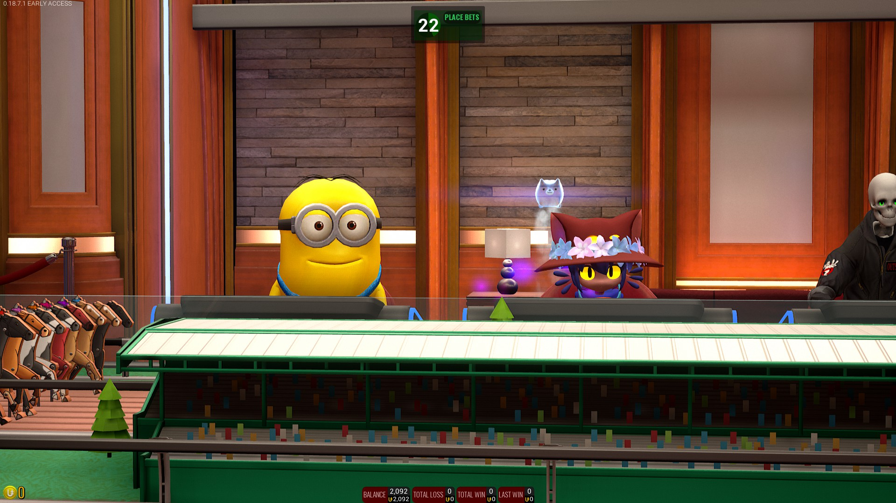
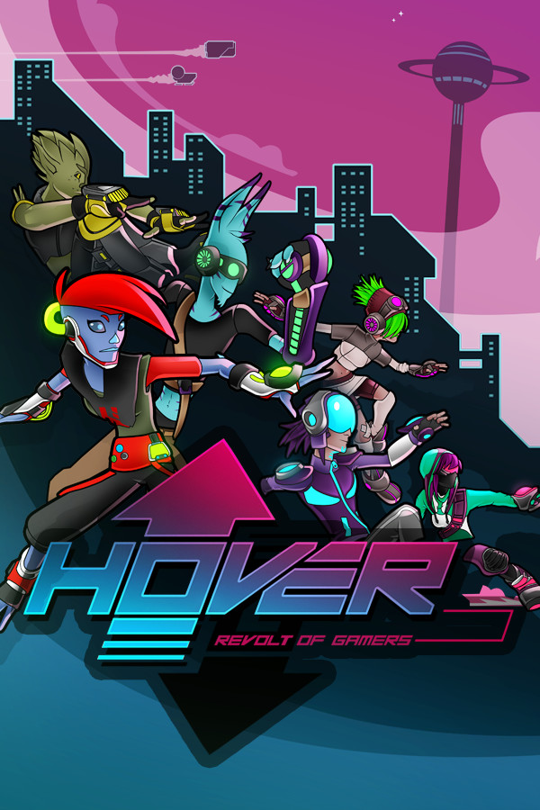
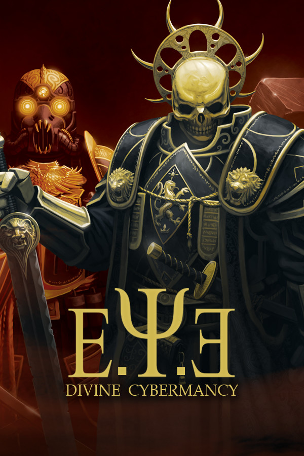
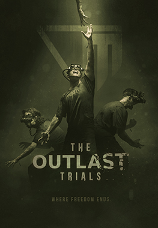
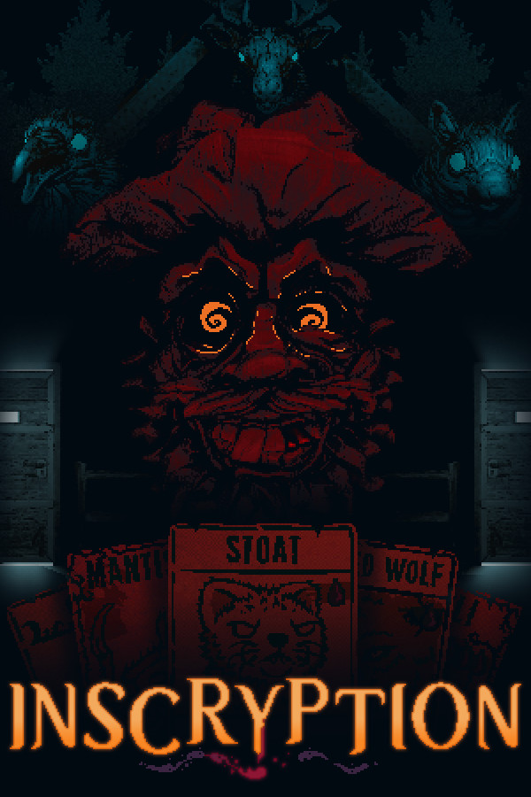
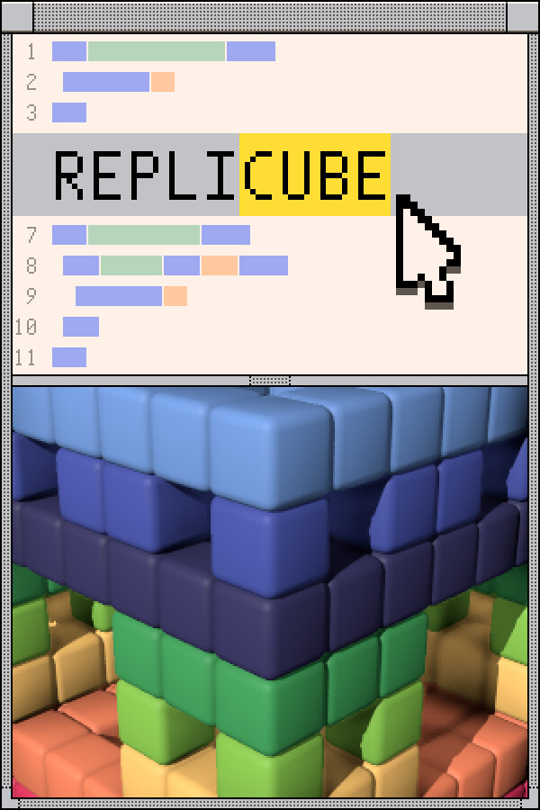

It's Steam Summer Sale time again! Whenever this comes around I always like to recommend games I play a lot that I like and think other people should check out - I especially like to recommend littler known games and older games that people might have skipped over just to hit the lucky 10,000s  .
.
If you've still got some cash in your pocket, check these ones out!
Reflex Arena

| stat | value |
|---|---|
| On sale for | 100% off |
| Current Sale Price | FREE! |
| Content Rating |
Not officially rated by the ESRB or PEGI. Likely equivalent to a Teen/13+ rating for Violence (players are robots), gothic themes, and online connectivity. |
| Tags | Multiplayer |
| PvP | |
| Competitive | |
| First Person Shooter | |
| Arena Shooter |
I'm cheating with this one, because Reflex is Free to Play now! It's a fantastic little game. I havent had this much fun making maps and playing Quake since the early 2000s. If you really like retro shooters you owe it to yourself to play Reflex. Today. Download it now.
Distance

| stat | value |
|---|---|
| On sale for | 80% off |
| Current Sale Price | $4.99 USD |
| Content Rating |
Rated Everyone 10+ by the ESRB. for: Fantasy Violence |
| Tags | Racing |
| Platformer | |
| Great Ambiance | |
| Online Multiplayer | |
| 4p Split Screen | |
| VR Capable |
Here's what I said about this game in my private recommendation thread from last year:
A member of the little-explored genre of "Platform Racing", Distance is the only game where you can drive a superpowered future car up a skyscraper into zero-G as a game mechanic rather than just a setpiece.
If you played this game and thought the story was too easy, pick it up again. Go into Arcade. Try for at least the bronze medal in a few tracks and watch how quickly the difficulty ramps up, especially when you start snooping out shortcuts. The skill ceiling for this game is mountainous.
Sometimes when I'm bored I'll hop onto the multiplayer server that's coded to load random workshop maps infinitely forever and just race and vote on maps. It's tons of fun even in singleplayer.
If you're on the fence, I highly recommend downloading the prequel game that Distance is based on, Nitronic Rush. Imagine that game but with a lot of QOL and a more sleek aesthetic, and you've got Distance.
Just uh, stay away from the Hot Wheels maps on the workshop.
Tower Unite

| stat | value |
|---|---|
| On sale for | 40% off |
| Current Sale Price | $11.99 USD |
| Content Rating |
Not officially rated by the ESRB or PEGI. Likely equivalent to a Mature/17+ rating for alcohol use (players can drink to intoxication and vomiting), gambling, and excessive gore/violence (while humorous in tone, the gore is not cartoony). Players have full control over the content of their condo, which can include unmoderated web content. Players can share video files from any web video site on the internet. |
| Tags | Multiplayer |
| Minigame Collection | |
| Home Decoration | |
| Social/Virtual Shared Space | |
| Responsive Devs | |
| Source Movement |
Someone who used to be very very close to me once described this game as "Club Penguin for adults" and uh, yeah absolutely. Couldn't have said it better myself.
Tower Unite is the spiritual successor to the old Gmod Tower game mode, recreated in Unreal Engine 4. The overarching framework of the game is kind of like those cozy life sims: you run around and play multiplayer minigames throughout the island to get credits, spend those credits at the virtual shops to buy tchotchkes, then organize those tchotchkes in your very own home using a Gmod-sandbox-style build system. Then, you can host your home as a server for your friends.

This image provided without comment.
I can't really give you a specific genre that would inform whether you would enjoy this game or not because there's just so much variety. Public condos would scratch the itch of anyone who's ever been a fan of exploring random VRChat worlds, but the minigames are inspired by things like Super Monkey Ball and Super Monday Night Combat... maybe this will interest the kind of people who play the Yakuza/LAD games?
I think what's special about Tower Unite is it's basically the dev's long-running passion project. Every time they have a new thing they're interested in, the first thing they do is see if they can get it into Tower Unite. My favorite example of this is the Libretro integration which lets you play retro video games on in-game arcade cabinets and TVs, but it's likely once the Steam Frame comes out progress will pick back up on the VR integration for example.
If you still need a reason to pick it up, I will give you this personal promise: If you ask me personally to play Tower Unite ever, I will say yes every time unless I have a prior commitment in meatspace and cannot physically sit at a computer to do it.
Hover

| stat | value |
|---|---|
| On sale for | 90% off |
| Current Sale Price | $1.99 USD |
| Content Rating |
Rated Everyone by the ESRB. for: Mild Language |
| Tags | Parkour |
| Platformer | |
| Racing | |
| Basketball | |
| Cooperompetitive | |
| Like if Mirror's Edge played like Borderlands |
Hover (which used to be called "Hover: Revolt of Gamers" before the word "gamer" became synonymous with "racist" for a brief stint in the late 2010s) needs a big fat old disclaimer on it before I can suggest it to you.
This game got Kickstarter'd early on the promise of being inspired by Jet Set Radio, and to that end was even one of the earlier indie games to pick up songs by Hideki Naganuma on that phrase. As a part of this Kickstarter'd venture, they sought out Playdius to publish it. However, the game didn't sell very well, and Dear Villagers (previously known as Playdius) basically completely ghosted the devs and denied them access to update their game even though they had a COMPLETE DLC READY TO LAUNCH ON ALL PLATFORMS with a hotfix patch. This game was on the fucking SWITCH and was given out on PS+ for gods sakes.
As a result, if you want to play the complete version of this game you need to grab the Official Unofficial BLTD Edition patch off the Steam Workshop, which includes the patches and balance changes that were planned as well as the DLC content. EDIT : Even this statement has scruples! Expect a "Thoughts on Hover BLTD Edition" article in the future, but for now the tl;dr is play it without the patch on your first playthrough. Linux and Steam Deck users should also force the game to use Proton for better controller support and multiplayer fixes
But it's two dollars. This is my comfort game. I love it. I can drop into this game and just run around and have fun and not care about anything. There's always something new to optimize about your player build, a cool trickline to practice, a time trial to try and beat.
The developers have moved onto new pursuits while the publishers sold the license to Nacon, who uh, aren't doing so hot, if you haven't heard, so this might be your last chance to grab the game. I have to recommend it on that premise alone.
Oh, and you can play the entire campaign cooperatively. You just activate a mission point and everyone interested in participating shows up at the starting line. If any one person succeeds, everyone gets credit. A+ way to do co-op.
E.Y.E: Divine Cybermancy

| stat | value |
|---|---|
| On sale for | 50% off |
| Current Sale Price | $4.99 USD |
| Content Rating |
Not officially rated by the ESRB or PEGI. Likely equivalent to a Mature/17+ rating for Extreme Violence/Gore, Excessive Profanity (your attacks have a chance to "Bullshit! Ultra-fail"), and references to drug and alcohol use. Also, online connectivity. |
| Tags | Multiplayer |
| PvE | |
| Cooperative | |
| First Person Shooter | |
| Immersive Sim | |
| Source Engine | |
| Chaotic and Random |
WARNING: Video may be loud!
This is, I think, a good example of the kind of thing you get up to in E.Y.E. After completing a mission, I get ambushed by some feds looking to hailfire spray me to death. But the thing that actually kills me? Healing myself too early and overdose into an early grave.
It's easy to assume everyone who would be interested in this game has played it, but I got back into it and feel the need to reiterate that the game is fucking good.
E.Y.E: Divine Cybermancy is a 1-32 player cooperative immersive sim, created in the Source engine by the french Streum On Studio. That might not sound too novel, but this game started development before The Orange Box came out - and finished well after it had. Set in a gritty cyberpunk colonized galactic dystopia, you play as an elite space marine cyborg ninja and work with your fellow troops to carve up cops, bandits and demons, all the while demanding an NPC give you a fucking straight answer for once about WHAT THE FUCK IS GOING ON.
I recommend getting a tour guide to co-op with you through some of the more obscure parts of the game. It's based on an old tabletop roleplaying game that never got released and so there's everything from critical failures to permanent character debuffs to even being able to tell some dickhead you're going to wear his face like a stupid moron party mask. However, it's also got influence from modern and retro computer games like Deus Ex, so there are research tech trees and sanity meters and shit... But it's all done wrong. It's like outsider art from insiders.
It's some crunchy Eurojank-ass old school Source engine gaming. If you really like Source games or weird Garrys Mod modes, this should not be slept on at all, but if you're a more modern gamer I would like to compare it favorably to Cruelty Squad. If you liked that game, you'll love this one.
The Outlast Trials

| stat | value |
|---|---|
| On sale for | 70% off |
| Current Sale Price | $11.99 USD |
| Content Rating |
Rated Mature/17+ by the ESRB. for: Blood and Gore, Drug Reference, Intense Violence, Nudity, Sexual Themes, Strong Language |
| Tags | Multiplayer |
| Horror/Slasher | |
| 4 Player Co-op | |
| Asymmetric PvP | |
| Playable Hostel movie |
This one might feel a little out of left field if you know me well, but I love a good gratuitously violent horror game.
I've had a "Thoughts on The Outlast Trials" article sitting in my drafts unfinished for quite a while. I don't know if I'll ever finish that, so let me just copy-paste some excerpts from the WIP.
The Outlast trials is a multiplayer live service four-player cooperative horror game. Set in a deranged cold war era corporate research laboratory, players act the part of unethically-acquired human experiments caged in hellish challenges designed to desensitize them into perfect deep cover agents. Players are challenged to be cautious, act stealthy, be perceptive, and use their wits in order to think on their feet and complete missions efficiently[...]
Friends of mine have heard me use [the phrase "Payday for Horror Fans"] to quickly describe this game in the past, but I really can't think of anything better to phrase it as. [...]When I specify "Payday for Horror Fans" I mean both sides of that description. On the Horror side, I mean horror fans. The kind of people who are into pop horror as a phenomenon and love to see the most shocking, vile acts on the silver screen. People who argue the lore of Friday the 13th films. People who think the best part of Alien is the chestburster scene. People with a tier list of SAW films who argue whether Jigsaw is justified or not. People who in their teens said Sonic the Hedgehog would be cooler if he was possessed by a demon and ripped someone's blood out of their blood[...]
This game is a master class in sound design. Everything about this game's audio is carefully concocted [...] Everything about this game's design screams "lovingly crafted."
If extremely dingy gritty slasher aesthetic gets you interested and you have the co-op multiplayer bug like I do, pick this up. I hadn't played the Outlast games and wouldn't have tried unless I'd been gifted it, but I don't regret it at all. There's a pretty stable community of players since it was given out as a free Playstation+ game a while back. Best of all, the microtransactions are completely ignorable if you don't give a shit about cosmetics. Just never click the shop, and only buy the 1000 coin battle passes!
Honorable Mentions
ZeroRanger
If you haven't heard of ZeroRanger yet, here's your sign. This is a fantastic game, and a great introduction to the scrolling shooter genre if you've ever been curious or only dabbled in it.
Currently 25% off, $8.99 USD.
Introversion Game Bundle
This is all the Introversion games that they released as an indie company before they made Prison Architect. This includes one of my favorite hacking games of all time and one the most unique real time strategy games I've ever played.
This was not included in the list proper because a previous Steam Summer Sale had this at 8 bucks, so it's likely to go down again in the future when the economy's not so painful.
Currently 51% off, $20.05 USD.

Inscryption
I hesitate to include this one because I feel like everyone's heard about it but this game deserves the praise it gets. Daniel Mullins has had 3 tries to get the "haunted video game" idea down, and the third time was definitely the charm. A roguelite deckbuilder in the most literal sense inspired by games like Pokemon Trading Card Game for the Game Boy.
Currently 60% off, $7.99 USD.

Replicube
An open ended puzzle game where you write shader code in Lua to recreate voxel models, with the difficulty coming from your own desire to optimize your code to compete on leaderboards. You can compete in code length or cycle speed. Has a free demo you can try at https://replicube.xyz to see if you're into it. Also has new puzzles every week!
Currently 50% off, $4.99 USD.